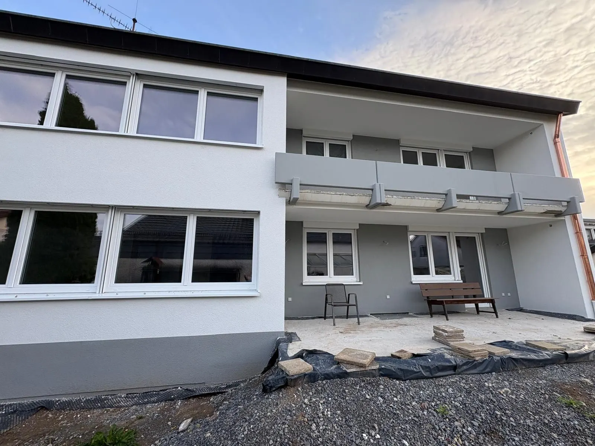
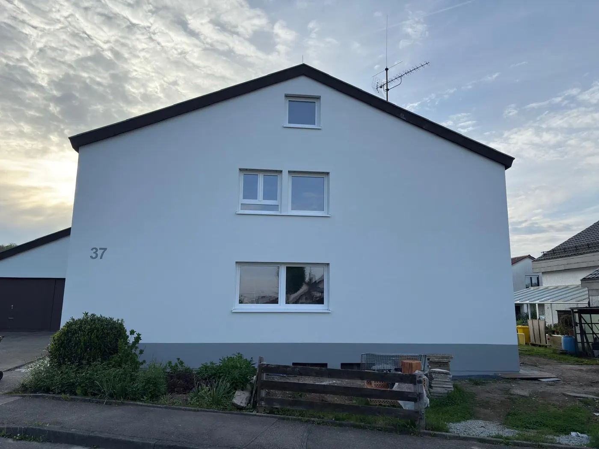
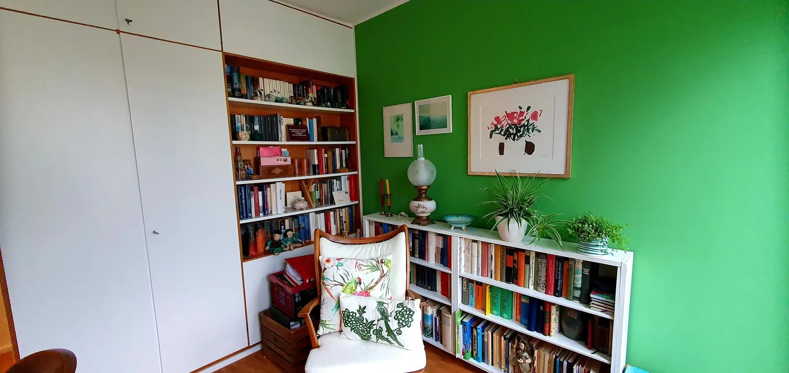
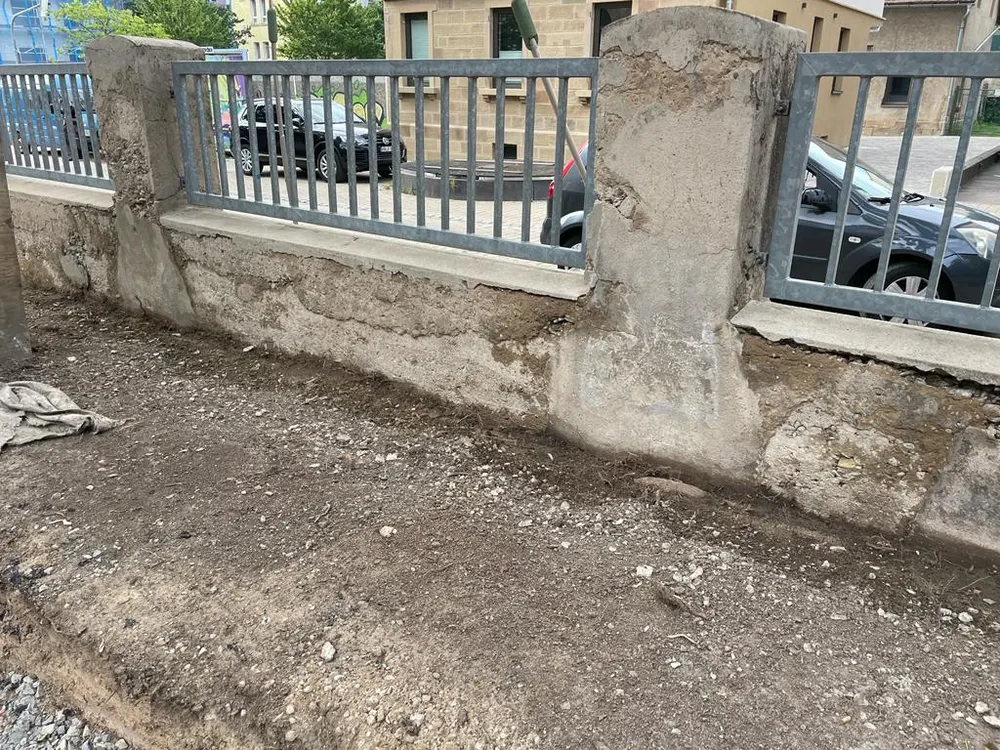
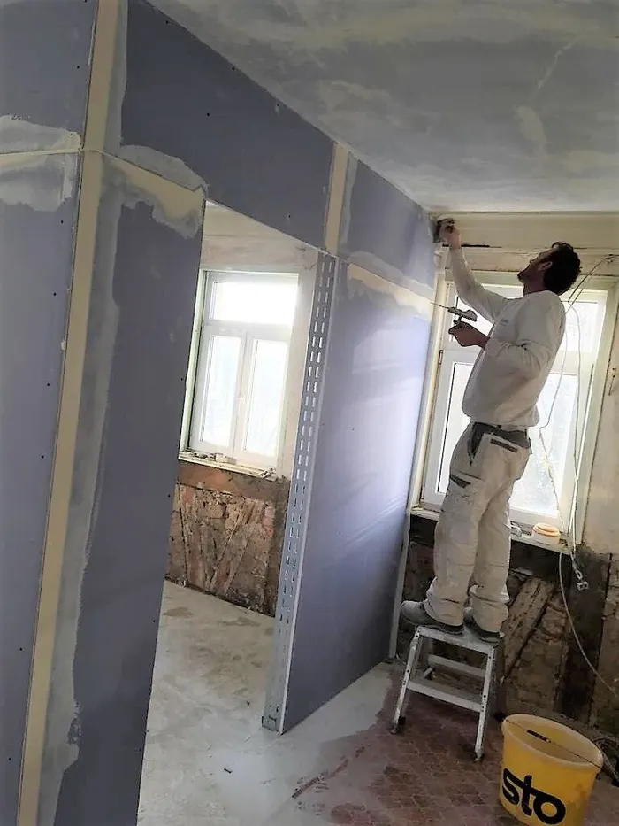
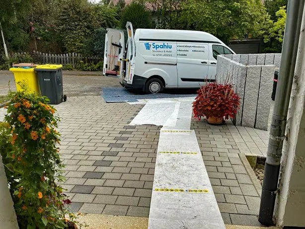

Leistungen
Fünf Gewerke, ein Betrieb in Allmersbach.
Putz, Dämmung, Farbe, Sanierung und Trockenbau bekommen Sie bei uns aus einer Hand. Das spart Abstimmung zwischen Firmen und hält die Baustelle kürzer.
Innen- & Außenputz
Ob neuer Putz auf dem Rohbau oder ausgebesserte Stellen im Altbau: Wir bringen Wände und Fassaden in eine saubere, tragfähige Oberfläche, auf der Farbe hält.
- Verputzarbeiten innen und außen
- Fassaden mit Struktur und abgesetztem Sockel
- Ausbesserung an Altbauwänden
Beispiel: Wohnhaus, Fassade rundum

Wärmedämmung
Eine gedämmte Fassade hält die Wärme im Haus. Wir kümmern uns um die Dämmung der Außenwand und um den Putz darüber, damit am Ende eine geschlossene Fassade steht.
- Fassadendämmung
- Putz und Anstrich auf der Dämmung
- Abstimmung mit Gerüst und Fensterbau
Wie viel eine Dämmung bei Ihrem Haus bringt, klären wir beim Termin vor Ort. Termin anfragen

Malerarbeiten
Vom weißen Flur bis zur einzelnen farbigen Wand im Wohnzimmer: Wir streichen innen und außen, für Wohnungen, Häuser und Gewerbe.
- Wände und Decken
- Fassadenanstrich
- Flure und Treppenhäuser
Auch Außenarbeit gehört dazu: Mauer am Schulgelände.

Altbausanierung
Im Altbau schauen wir zuerst, was noch gut ist. Dann saniert, ersetzt und ergänzt werden nur die Stellen, bei denen es nötig ist: Mauern, Putz, Bäder, ganze Wohnungen.
- Mauer- und Betonsanierung
- Komplettsanierung von Bädern
- Restaurierung und Neugestaltung von Wohnräumen und Fassaden
Beispiele: Mauer am Schulgelände und Komplettbad im Dachgeschoss

Trockenbau
Neue Wände, abgehängte Decken und Durchbrüche in Gipsplatte: schnell gebaut, sauber verspachtelt und direkt bereit für den Anstrich.
- Trennwände und Vorsatzschalen
- Abgehängte Decken
- Spachteln und Übergabe für den Maler
Weil Trockenbau und Maler bei uns zusammenarbeiten, wartet niemand auf den anderen. Anfragen


Sauberkeit zuerst
Sauber arbeiten heißt: erst abdecken, dann anfangen.
Wege, Böden und Pflanzen am Haus werden geschützt, bevor das erste Gerüstteil steht. Das kostet am Anfang Zeit und spart Ihnen hinterher das Putzen.
- Folie auf Wegen und Böden
- Pflanzen am Haus werden geschützt
- Das Ergebnis sieht man: Schulmauer, Fassade, Flur
Kontakt
Rufen Sie an oder schreiben Sie uns, wir melden uns.
07191 4939315Ein Termin im Büro in Allmersbach ist nach Absprache auch samstags möglich.
- Adresse
- Spahiu Stuckateur & Maler GmbH
Schönblick 7
71573 Allmersbach im Tal - info@spahiu-stuckateur.de
- Fax
- 07191 4934655
- Social
- InstagramFacebook